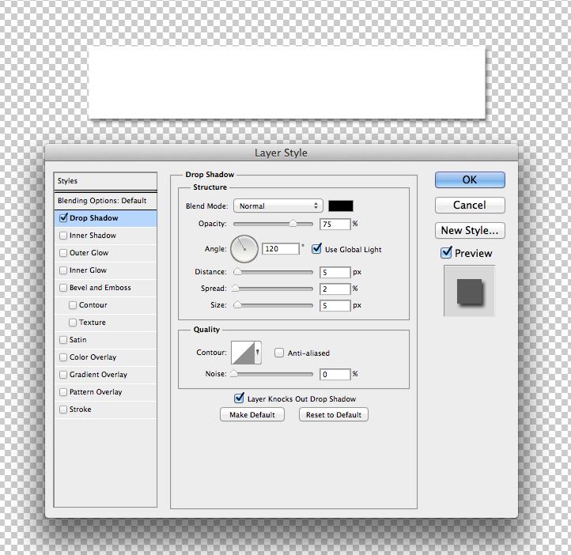

Drop Shadows come it two forms, box-shadows and text-shadows. Box shadows can be applied to boxes and text shadows applied to text. Both properties need a horizonal offset, vertical offset, blur, spread, and color. Colors can be Hex, RGB, or RGBA.
.demo001{
background:#fff;
padding:10px;
box-shadow:5px 5px #000;
}
<div class="demo001"some stuff></div>
Text-shadow much the same way
.demo002{
background:#fff;
padding:10px;
color:red;
text-shadow:2px 2px #000;
}
<div class="demo002"some stuff></div>
This can translate into a Photoshop layer style relativy well as a drop shadow. The biggest problem is that the units of measurement are completely different. In CSS we use horizonal and vertical positions to determine distance, while in PS its an angular.

.demo003{
background:#fff;
padding:10px;
color:#000;
box-shadow:2px 2px 4px 1px rgba(0,0,0,0.5);
}
<div class="demo003"some stuff></div>
Translation is possible, but the units of measurement in recreating the shadow are pretty arbitrary.
Gradients